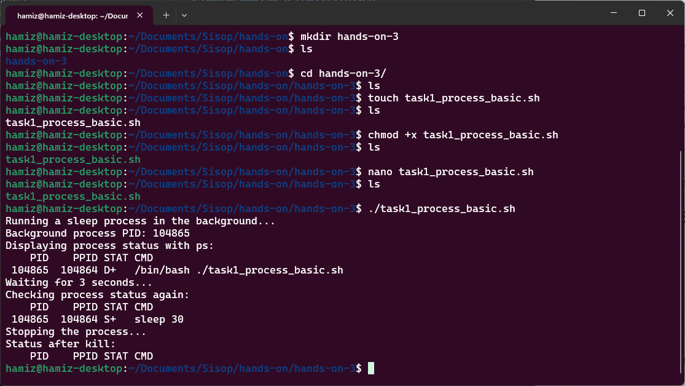
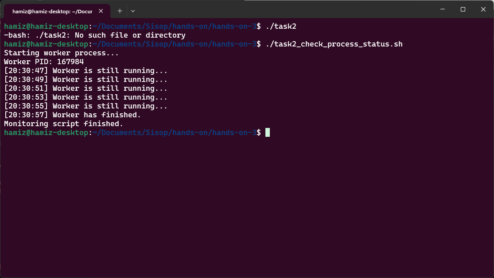
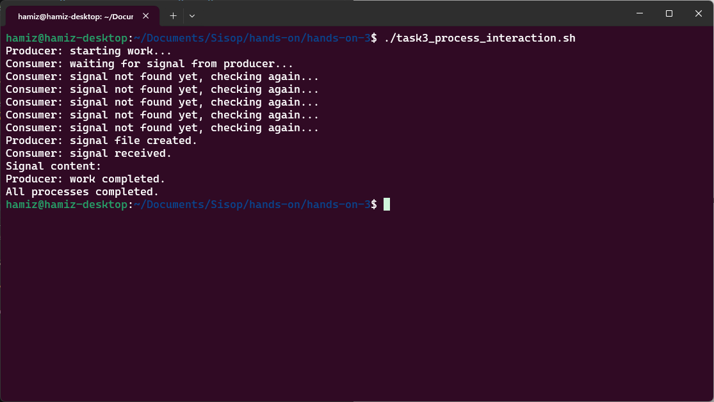
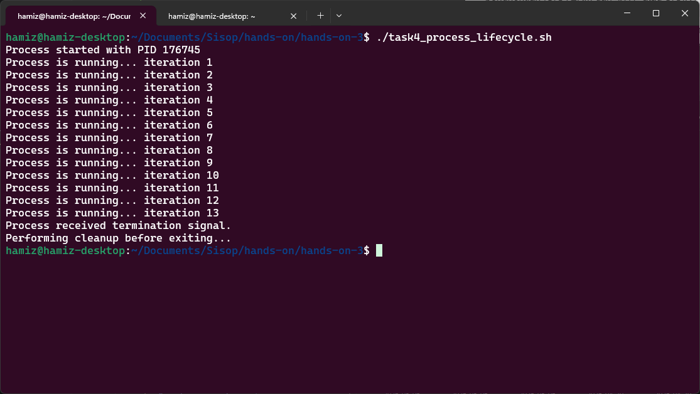
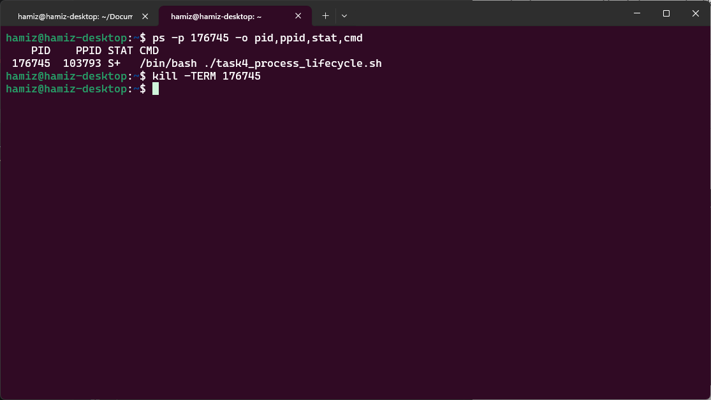
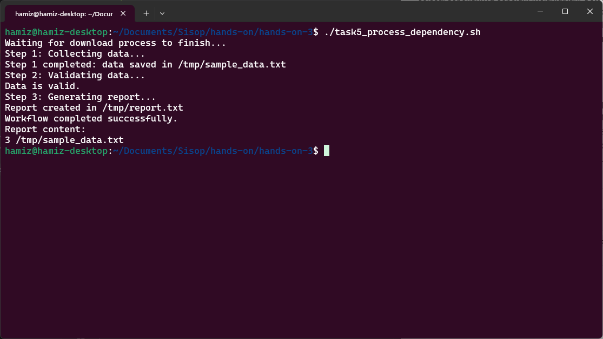

| NRP | Nama |
|---|---|
| 5025251246 | Hamizan Rifqi Afandi |
Pada hands-on ini, konsep dasar process pada sistem operasi dibahas lewat serangkaian shell script yang bertujuan pada pembuatan process, observasi PID, monitoring status, komunikasi antarprocess, penganganan signal, dan dependency workflow.
Segmen ini memperkenalkan mengenai pembuatan process dan observasi PID untuk mengetahui identitasnya. Tujuan utama dari segmen ini yaitu menunjukkan bahwa sebuah process dapat dipindahkan ke background, diamaati statusnya, lalu diberhentikan melalui command pengguna.
File task1_process_basic.sh mengimplementasikan hal tersebut melalui dijalankannya perintah sleep 30 & untuk membawanya ke background selama 30 detik. Kemudian PID dari process tersebut di catat ke variabel PID_BG menggunakan $!, lalu diamati dengan command ps -p -o. Script lalu menunggu sepanjang 3 detik, membunuh process tersebut menggunakan signal kill dengan command kill, lalu memeriksa kembali status process.
Dengan background execution, observasi PID, dan terminasi, mahasiswa dapat melihat bahwa process memiliki lifecycle yang dapat diikuti dan dikelola sejak tahap paling dasar.
| Komponen | Isi |
|---|---|
| Filename | task1_process_basic.sh |
| Tools | echo, sleep, $!, ps, kill |

Dalam beberapa simple system, suatu process terkadang sering membutuhkan untuk mengetahui apabila suatu process masih berjalan, telah berhenti, atau telah gagal. Contoh nyatanya bisa dengan mengimplementasikan script monitoring untuk memastikan bahwa suatu service masih aktif.
File task2_check_process_status.sh mengimplementasikan hal tersebut melalui dijalankannya imitasi process worker sleep 10 & untuk membawanya ke background selama 10 detik. Kemudian PID dari process tersebut di catat ke variabel WORKER_PID menggunakan $!, lalu memeriksa keberadaan process dengan command kill -0 dengan jeda 2 detik. Apabila worker masih berjalan, process mengoutput bahwa worker masih berjalan, sedangkan apabila tidak, process mengoutput bahwa telah berhenti dan keluar dari loop.
Status sebuah process dapat dipantau dari script lain tanpa harus menghentikan process tersebut. Dengan kill -0, process dapat melakukan cek keberadaan suatu process secara ringan dan menggunakan hasilnyauntuk mengatur alur program. Segmen ini memperlihatkan dasar monitoring process yang nanti sangat berguna pada service supervision dan workflow automation.
| Komponen | Isi |
|---|---|
| Filename | task2_check_process_status.sh |
| Tools | echo, sleep, $!, kill |

Segmen ini memperkenalkan komunikasi antar proses menggunakan file sebagai media sederhana untuk koordinasi. Tujuan utamanya yaitu menunjukkan bahwa dua proses dapat berjalan bersamaan, saling berbagi informasi, dan melakukan sinkronisasi tanpa mekanisme komunikasi antar proses yang rumit seperti pipe atau socket.
File task3_process_interaction.sh mengimplementasikan dua fungsi: producer dan consumer. producer mensimulasikan proses yang bekerja selama 5 detik, lalu membuat file sinyal di /tmp/process_done.signal sebagai tanda bahwa pekerjaannya selesai. consumer secara periodik memeriksa keberadaan file tersebut menggunakan loop while [ ! -f "$SIGNAL_FILE" ]. Ketika file ditemukan, consumer membaca isinya dan menampilkannya. Kedua proses dijalankan sebagai background process (producer & dan consumer &), kemudian wait digunakan untuk memastikan keduanya selesai sebelum skrip membersihkan file sinyal.
Dengan pendekatan file-based signaling, mahasiswa dapat memahami bahwa komunikasi antar proses tidak selalu membutuhkan mekanisme yang rumit. File system dapat berfungsi sebagai media komunikasi sederhana yang efektif untuk koordinasi dan sinkronisasi dasar antara proses yang berjalan secara konkuren.
| Komponen | Isi |
|---|---|
| Filename | task3_process_interaction.sh |
| Tools | echo, sleep, rm, &, wait, cat, file system (/tmp) |

Segmen ini memperkenalkan siklus hidup proses secara lengkap, mulai dari proses dibuat, berjalan, menerima sinyal, hingga dihentikan. Tujuan utamanya yaitu menunjukkan bahwa sebuah proses tidak hanya "berjalan" atau "berhenti", tetapi memiliki tahapan hidup yang dapat diamati dan dikendalikan, termasuk kemampuan untuk melakukan pembersihan (cleanup) sebelum terminasi.
File task4_process_lifecycle.sh mengimplementasikan proses dengan infinite loop yang mensimulasikan proses aktif berjalan terus menerus. Script ini menggunakan trap cleanup SIGTERM SIGINT untuk menangkap sinyal penghentian (SIGTERM dari kill atau SIGINT dari Ctrl+C). Ketika sinyal diterima, fungsi cleanup() dipanggil untuk melakukan pembersihan sebelum proses keluar. Variabel $$ digunakan untuk menampilkan PID dari proses script itu sendiri. Dari terminal terpisah, pengguna dapat mengamati status proses menggunakan ps -p <PID> -o pid,ppid,stat,cmd dan mengirim sinyal terminasi dengan kill -TERM <PID>.
Dengan mekanisme signal handling menggunakan trap, mahasiswa dapat memahami bahwa proses memiliki siklus hidup yang dapat diobservasi dan dikendalikan secara eksplisit. Konsep cleanup sebelum terminasi sangat penting karena menunjukkan bahwa menghentikan proses dengan benar seringkali membutuhkan tindakan pembersihan, bukan sekadar mematikannya secara paksa.
| Komponen | Isi |
|---|---|
| Filename | task4_process_lifecycle.sh |
| Tools | trap, $$, echo, sleep, ps, kill |
Terminal 1 - Menjalankan proses:

Terminal 2 - Observasi dan pengiriman sinyal:

Segmen ini memperkenalkan konsep dependensi antar proses dalam sebuah alur kerja (workflow). Tujuan utamanya yaitu menunjukkan bahwa suatu proses mungkin bergantung pada hasil dari proses lain, dan Bash dapat digunakan untuk mengatur urutan eksekusi serta memeriksa keberhasilan setiap langkah sebelum melanjutkan ke langkah berikutnya.
File task5_process_dependency.sh mengimplementasikan tiga langkah dalam sebuah workflow: download_data (mengumpulkan data), validate_data (memvalidasi data), dan generate_report (membuat laporan). Proses download_data dijalankan di background dengan PID-nya dicatat, kemudian wait $PID_DOWNLOAD digunakan untuk memastikan proses pengumpulan data selesai sepenuhnya sebelum melanjutkan. Setelah itu, validate_data memeriksa apakah file data tersedia dan tidak kosong, mengembalikan exit status (0 untuk sukses, 1 untuk error). Jika validasi berhasil ($? -eq 0), maka generate_report dijalankan untuk membuat laporan; jika gagal, workflow berhenti dan menampilkan pesan error.
Dengan mekanisme wait untuk sinkronisasi dependensi dan pengecekan exit status untuk validasi hasil, mahasiswa dapat memahami bahwa Bash mampu membangun workflow yang terstruktur, aman, dan memiliki kontrol ketergantungan yang jelas antar proses. Konsep ini menjadi fondasi penting untuk memahami otomatisasi sistem, job scheduling, dan pipeline data di lingkungan yang lebih kompleks.
| Komponen | Isi |
|---|---|
| Filename | task5_process_dependency.sh |
| Tools | echo, sleep, wait, $?, if-else, file system (/tmp), wc -l |
